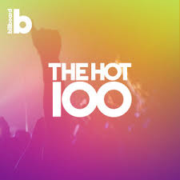

Gen Z
News
Politics
Culture
Tech and Science
Brain Waves
Spotlight Z
About Us
CULTURE
New Reads
July 4, 2017
What's a Generation Z?
Angelica Janumala
Today's adults love to put labels on our generation, as if we were fancy foods in a supermarket or exotic animals at the zoo. To be fair, our generation is a bit different from the ones that came before it.
July 4, 2017
A Brief History of Memes As An Art Form
Magda Wojtara
It is 2017 and at this point it is fair to say that anyone with social media or an electronic device is aware of what “memes” are. Recently, there has been some bad press news about Harvard rescinding acceptances over offensive memes posted by students in a chatroom. However, today the focus is on how memes have had a positive impact on pop culture: as a form of art.
July 4, 2017
top 10 on the Hot 100: Opinions
Jessica Morales

This summer has begun with catchy songs that get stuck in your head. You can't help but dance and sing along to the songs. The best part is that each of them has their uniqueness.
More Reads
July 4, 2017
What's a Generation Z?
Angelica Janumala
Today's adults love to put labels on our generation, as if we were fancy foods in a supermarket or exotic animals at the zoo. To be fair, our generation is a bit different from the ones that came before it.
July 4, 2017
A Brief History of Memes As An Art Form
Magda Wojtara
It is 2017 and at this point it is fair to say that anyone with social media or an electronic device is aware of what “memes” are. Recently, there has been some bad press news about Harvard rescinding acceptances over offensive memes posted by students in a chatroom. However, today the focus is on how memes have had a positive impact on pop culture: as a form of art.
July 4, 2017
top 10 on the Hot 100: Opinions
Jessica Morales
This summer has begun with catchy songs that get stuck in your head. You can't help but dance and sing along to the songs. The best part is that each of them has their uniqueness.